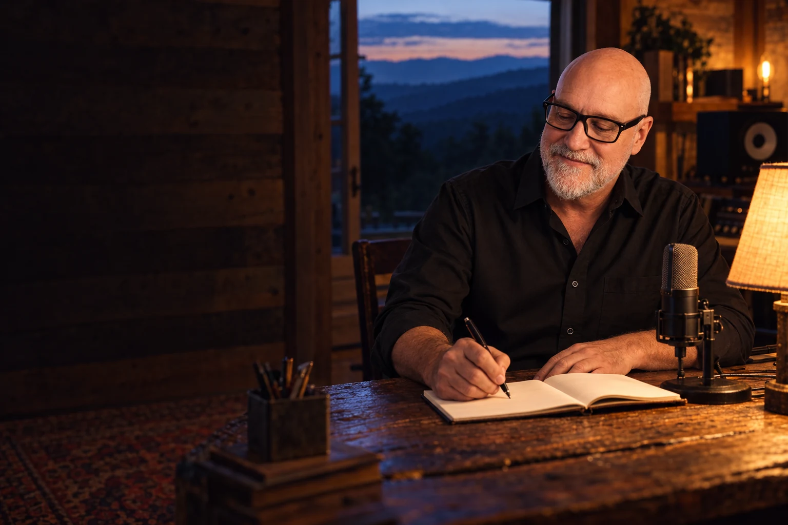
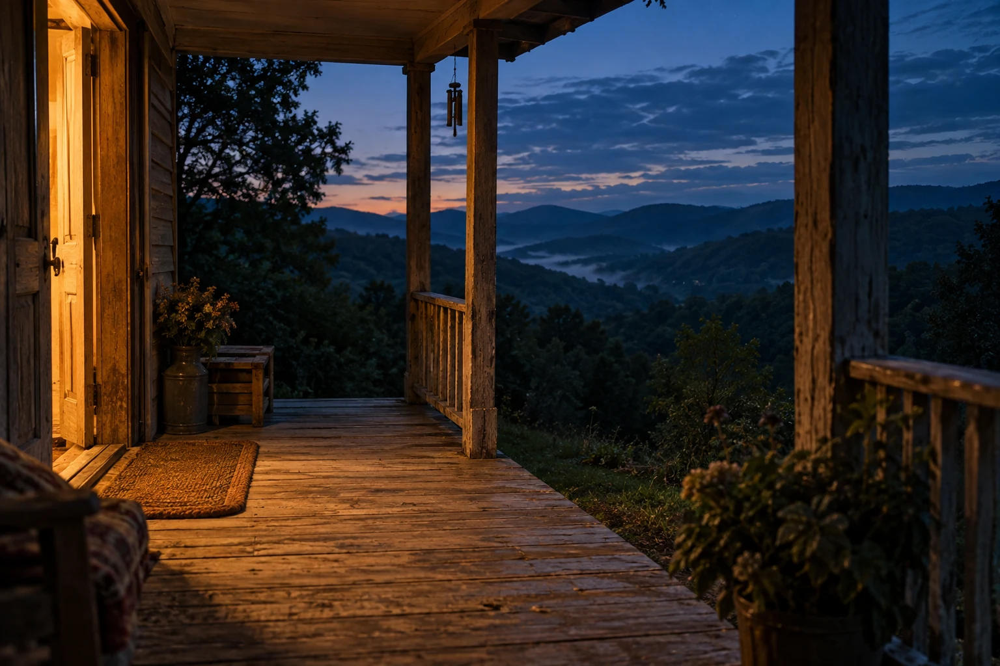
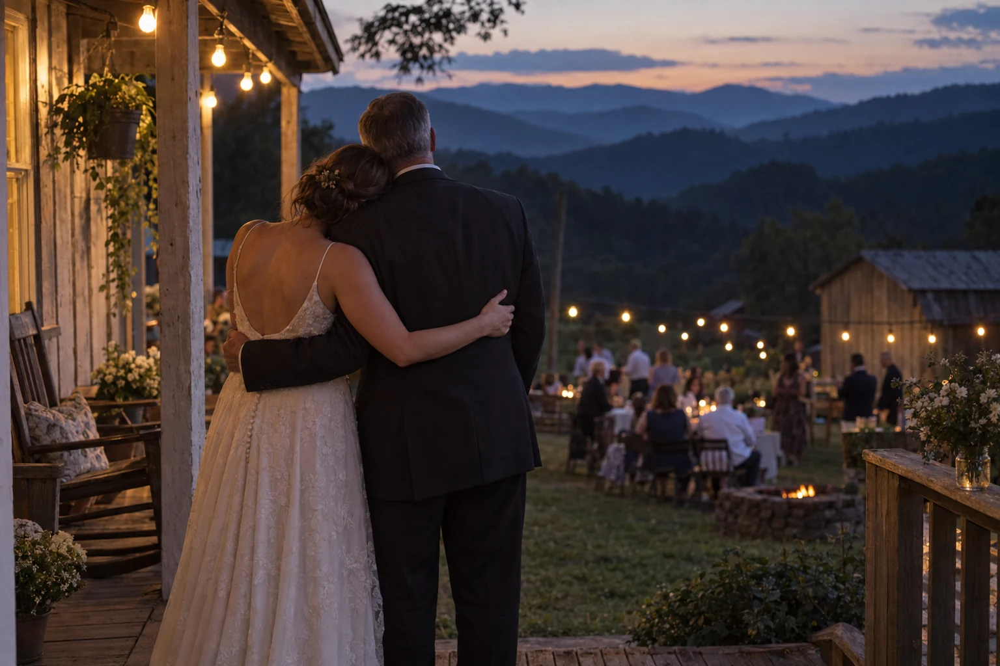
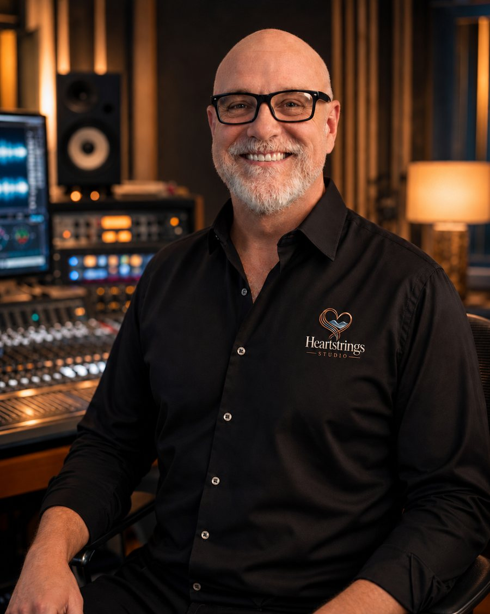

Your personal keepsake page
One quiet home for your song, artwork, and lyrics.

LUMBERPORT, WEST VIRGINIA · CUSTOM SONGWRITING
Your people. Your memories. The things worth holding onto.
Personally written by Tim Harbert, one story at a time.
$150 flat · Delivered in 48–72 hours

Pull up a chair.FROM THESE HILLS. FOR YOUR PEOPLE.
The laughter. The ache. The love underneath it all.
Your memories and your words, made into a song
only your story could have made.
FOR THE MOMENTS WORTH HOLDING ONTO
THE STORIES ALREADY SINGING

The kind of love you carry with you.THE HEARTSTRINGS KEEPSAKE
A personal, unlisted page brings your song, custom artwork, and full lyrics together. Share the link with your people, or keep it close.
See everything included ↓One quiet home for your song, artwork, and lyrics.
Created for the story and feeling behind your song.
Save it, print it, play it, and pass the story on.
FROM MEMORY TO MELODY
Names. Memories. Inside jokes. The things only you know. Share them in a short intake form, along with the style and feeling you have in mind.
Tim writes the lyrics and produces your song. You'll see the lyrics first, with one round of revisions before production.
In 48–72 hours, your keepsake page arrives by email, with your song, artwork, and downloads ready to enjoy.
ONE STORY. ONE PRICE.
Personally written by Tim Harbert.
Built around the people who matter to you.
Memorial songs always receive free 24-hour delivery. No rush fee. That worry is off your list.
If the finished song misses the mark, Tim starts over from scratch.
THE PEOPLE WHO LIVED THE SONGS
“My song has brought so much comfort to me. Every time I listen, I realize how blessed I was.”
“My daughter cried, as well as I did. I would have him write a hundred songs for me.”
“Tim took over and crafted a truly remarkable tribute that beautifully honored our dear friend.”

LUMBERPORT, WEST VIRGINIATHE PERSON BEHIND YOUR SONG
I'm the founder of Heartstrings Studio. I create custom songs that honor life's meaningful moments — love, loss, gratitude, and the spaces in between.
Music carried me through some dark chapters and taught me the power of real connection. Now I help others preserve what matters most through melody and story.
When words fall short, a song can hold what needs to be remembered.
Watch my story on WBOY's 304 Today ↗A FEW THINGS YOU MAY BE WONDERING